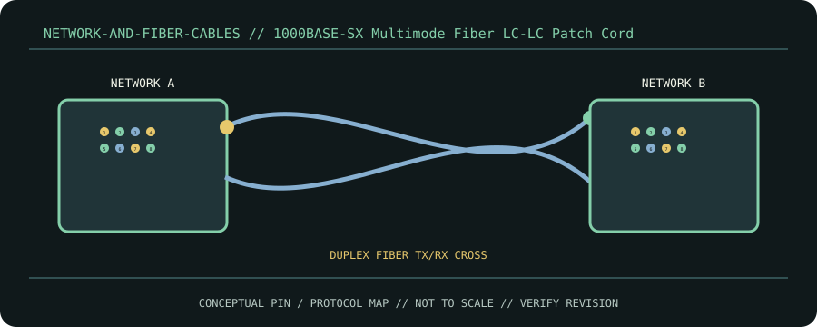

[ CABLE / ADAPTER RECORD // IEEE 1000BASE-SX 850 NM MULTIMODE ]
1000BASE-SX Multimode Fiber LC-LC Patch Cord
Duplex LC/UPC multimode pair; transmit and receive fibers cross between optics.

CLASSIFICATION: Network and fiber cables. Identify protocol, direction, pinout and exact cable revision before connection.
Interface and capability
| Standard / protocol | IEEE 1000BASE-SX 850 nm multimode. Connector appearance alone does not establish compatibility. |
|---|---|
| Endpoint / pinout | Duplex LC/UPC multimode pair; transmit and receive fibers cross between optics. |
| Capability / limits | Typical maximums vary by fiber: 220 m on 62.5 µm FDDI grade, 275 m OM1, 550 m OM2; verify PHY/fiber spec and loss budget. |
| Certification / length | Standards define interface requirements, not every assembly’s performance. Certification, mode, current/power rating, direction and maximum length belong to the exact product/revision and complete channel; verify its manufacturer specification. Do not infer certification from connector shape or marketing terminology. |
Compatibility & handling
- Match SX multimode optics. Clean ends, respect bend radius and do not substitute single-mode LX optics based on connector fit.
- Inspect connector keying, latch, contact condition, shielding, jacket and model/revision marking. Stop if contacts are bent, loose, scorched, corroded or mismatched.
- Route without tension or sharp bends; follow product bend-radius, strain-relief, current and environmental limits. Test at the intended protocol and mode—physical fit is not a compatibility test.
Sources & further reading
- IEEE 802.3 Ethernet StandardPrimary standards-body or manufacturer reference for IEEE 1000BASE-SX 850 nm multimode; confirm exact cable assembly, certification and revision.